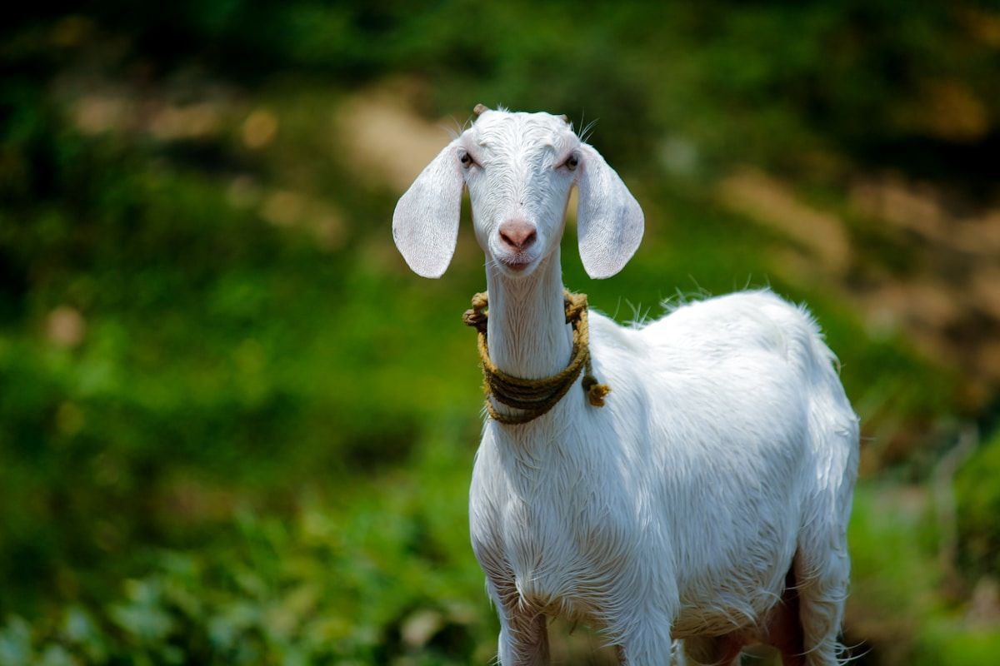
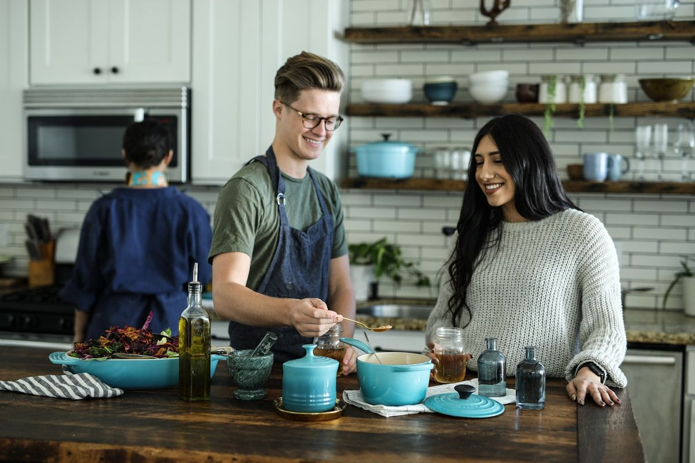

Mawun Valley Farm — space to slow down and connect deeply.
🐐 Farm Activities

Feed the Goats
📍 At the farmMorning routine with our friendly goats.
🏐 Volleyball
📍 At the farmCommunity games every afternoon.

🌱 Rice Field Walks
📍 Surrounding farmPeaceful walks at sunrise or sunset.
☕ Food & Community
🍰 Noni's Cafe
📍 At the farmLegendary cheesecake + coffee overlooking the valley.
🔥 Friday BBQ
📍 At the farmWeekly feast with grilled fish, satay, music.

🍳 Cooking Class
📍 At the farmLearn Indonesian dishes with garden ingredients.
🎨 Culture
Sasak Village
📍 15-20 minTraditional houses, centuries-old customs.

🧵 Traditional Weaving
📍 20-30 minWatch artisans on traditional looms.
🧘 Wellness

Yoga
📍 At the farmMorning sessions with mountain views.
"The farm taught me how to breathe again." — Guest from Melbourne